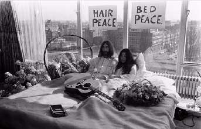

Борис Акунин
Мой календарь
Иногда (даже часто) вам утром не хочется вставать с постели. Но вы встаете, потому что дела, обязательства, да и вообще - совестно.
Сегодня у вас полное право целый день проваляться в кровати, не испытывая ни малейших угрызений.
25 марта 1969 года молодожены Джон Леннон и Йоко Оно объявили «постельный протест», он же лежачая забастовка. И провели в постели не один день, а целую неделю.
Протестовали они против вьетнамской войны. В президентском «люксе» амстердамского «Хилтона». Война из-за этого не кончилась, но прессе понравилось. Фотосессии шли нон-стоп.
Подумайте против чего хотели бы попротестовать вы. И укладывайтесь. Всё необходимое для полноценного существования приготовьте заранее, как это сделали Джон и Йоко.
Вы в более выгодном положении, чем они - вам необязательно приглашать журналистов. Наслаждайтесь приватностью, и пусть мир подождет.
Можно устроить постельную забастовку и спонтанно. Если вы читаете этот текст, еще лежа в кровати, не вставайте. А если уже встали, ложитесь обратно. Give peace a chance.